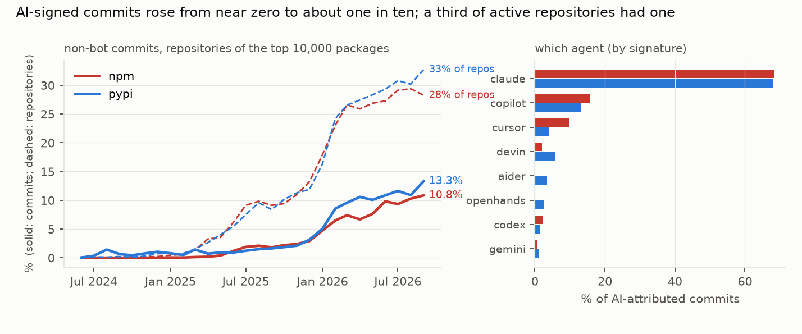
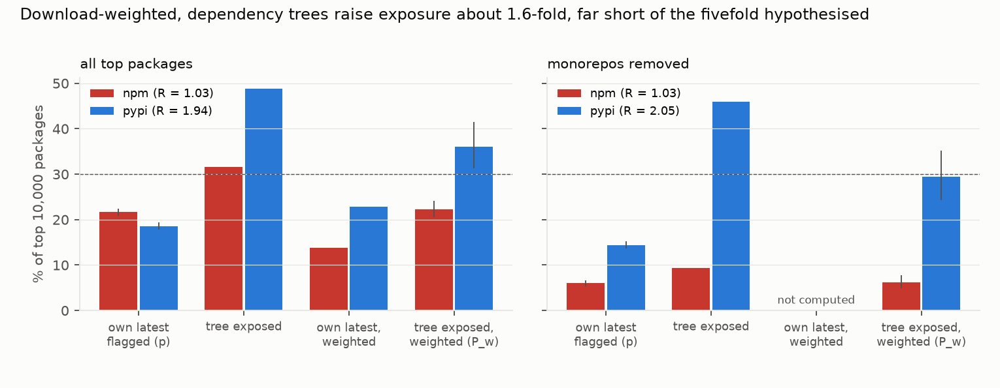

Verdict: H1 Refuted; H2 Refuted.
- H1 (download-weighted dependency exposure is at least 5× the share of packages that are themselves AI-flagged,
and over 30% for npm): Refuted on both parts.
- npm.
- p = 21.6% of top packages' latest releases have an AI-signed commit in their release range. This is a repository-level rate: it is 6.0% for packages whose repository hosts no other top package and 38.6% for packages in multi-package repositories.
- The download-weighted probability that a top package's resolved tree contains such a release (P_w) is 22.3% (20.6–24.1%).
- R = P_w / p = 1.03 (0.95–1.11).
- PyPI. p = 18.6%, P_w = 36.1% (31.3–41.5%), R = 1.94 (1.67–2.24).
- R mixes two effects (post hoc). P_w is download-weighted and p is not.
- Heavily downloaded packages are less often flagged themselves: 13.8% (npm) and 22.8% (PyPI) download-weighted.
- Trees then raise those rates about 1.6-fold: 1.61 (1.51–1.73) for npm and 1.58 (1.43–1.78) for PyPI.
- The tree effect is real but far below fivefold.
- npm.
- The caveat is monorepos, and it lowers npm sharply.
- The clones carry no file paths. So when one repository hosts many packages, a commit to any of them flags every sibling's release.
- Without such packages, npm p is 6.0% and P_w 6.1%; PyPI p is 14.4% and P_w 29.4%.
- Tag-only ranges give npm 14.3% / 14.9% and PyPI 11.7% / 25.2%.
- H2 (AI-signed commits reach a release at most half as fast as matched human commits): Refuted.
- The median commit-to-release latency is 6.8 days for AI-signed commits against 6.7 for human commits matched in the same package within 14 days. The ratio is 1.01 (0.99–1.11).
- Matching as the plan worded it (per repository, each commit once, post hoc) gives 1.12 (1.05–1.19). AI-signed commits wait slightly longer.
- The trend is steep.
- AI-signed commits were 0.1% of non-bot commits in npm repositories in March 2025 and 10.8% in September 2026; in PyPI repositories, 1.4% and 13.3%.
- In September 2026, 28% (npm) and 33% (PyPI) of active repositories had at least one (post hoc).
- The share of new releases containing at least one AI-signed commit rose from under 1% in January 2025 to 37% (npm) and 33% (PyPI) in September 2026. Without monorepo packages the September 2026 shares are 21% and 25%.
- Claude-model signatures (mostly Claude Code) are 68% of attributed commits, Copilot 13–16% and Cursor 4–10%.
- The detector is precise.
- A stratified audit of 120 matches, weighted towards the riskier rules, was labelled by two blind labellers.
- Every match was a genuine AI signature, with 100% agreement. Per-stratum 95% lower bounds are 0.69–0.86.
- The detector is blind to unsigned use and misses about 3% of signed commits, so every share is a lower bound.
In plain terms
Most software is assembled from thousands of free packages that other people maintain. AI coding tools, which write code and sometimes commit it on a developer's behalf, have spread fast. Many leave a signature in the project history, such as a "Co-authored-by: Claude" line.
We looked at the 20,000 most-downloaded packages for JavaScript (npm) and Python (PyPI), and read every change made since 2024 to the nine in ten we could trace to a repository. - In September 2026, about one in ten changes carried an AI signature, up from almost none two years earlier. Between a quarter and a third of active projects had at least one. - Between a fifth and a third of new versions included at least one such change, depending on how packages that share a repository are counted. - These are minimum figures, because unsigned AI help leaves no trace.
We expected the reach to multiply because packages depend on other packages. Install one popular package and you pull in dozens of others, so a few AI-touched packages could end up in most installations. Counted fairly, by downloads on both sides, dependencies raised the reach about one and a half times, not the fivefold we expected.
We also checked whether AI-written changes are rushed out faster than human ones. They are not: both take about a week to reach a release.
Nothing here says AI-written code is less safe. The study measures where it goes, not how good it is.
What was asked
The lead (software-security-ai-code-supply-chain-exposure) asked how far AI-attributed commits reach registry
releases, and through dependency trees, installations.
Prior work studies agent pull requests on GitHub: - AIDev (Li, Zhang & Hassan, MSR 2026; arXiv 2602.09185), with 932,791 agent pull requests; - fingerprinting of agents (Ghaleb 2026, arXiv 2601.17406); - adoption (Robbes et al., TOSEM 2026; arXiv 2601.18341); - follow-up fixes on agent pull requests (Takerngsaksiri et al. 2026, arXiv 2609.26847); - the closest work, a validated census of agent traces across 180 million repositories (Khosravani & Mockus 2026, arXiv 2606.24429). It measures prevalence in repositories, not in releases or dependency trees, and reports that bot-account lookups recover only a few percent of the Claude Code commits that multi-method detection finds. That supports relying on trailers here, as a lower bound.
None was found that maps agent commits to published releases or weights them by dependency trees and downloads.
How it was done
- Packages. The top 10,000 per ecosystem by last-month downloads (ecosyste.ms, fetched 2026-10-24), with registry metadata: release publish times, pre-releases excluded.
- Repositories.
- GitHub repositories were resolved for 9,810 npm and 9,026 PyPI packages: 13,134 repositories.
- They were cloned bare, treeless and shallow since 2024-01-01.
- 10,372 were cloned. 2,626 had no commits since then and count as cloned with unflagged releases (D1). 135 were gone or private, and 1 failed.
- Attribution follows a fixed rule list (
code/attribution.py, committed before any clone): co-author trailers, "Generated with" lines and agent accounts for 11 tools. Dependency and maintenance bots are excluded.- "AI-signed" includes review suggestions committed with a Copilot or gemini-code-assist trailer: roughly half to two thirds of Copilot matches (approximate, from the stored first co-author trailer).
- Comparable review bots (CodeRabbit, Greptile) are not counted.
- Releases.
- Each release since 2024-06-01 is matched to a git tag (283,022 by tag range, 5,344 by tag and date), or else to a date window on the default branch (134,584).
- A release is flagged if its commit range contains an AI-signed commit.
- 22,747 releases (5.4%) have an empty range and are unflagged (
results/tables/coverage.json). - Flag rates rise with range size, from 5.8% for 1–5 commits to 76% for more than 2,000. Large ranges come from monorepos and date windows.
- Exposure.
- deps.dev resolved graphs exist for 9,663 npm and 9,649 PyPI latest versions.
- A root is exposed if any node, itself included, is a flagged release.
- Flags exist only for packages in the study set, which covers 97.7% (npm) and 99.4% (PyPI) of non-root node names.
- Versions are matched in canonical form (D2: deps.dev pads PyPI versions). In-set nodes match a release since June 2024 for 57.9% (npm; most of the rest are older versions) and 85.9% (PyPI).
- P_w weights roots by downloads. Intervals come from 2,000 package bootstrap resamples.
- Latency.
- Each AI-signed commit in a tag-based range is matched to the nearest-in-time human commit in the same package (±14 days, without replacement).
- The ratio of medians has a bootstrap interval over repositories.
- The plan said "same repository". That matching is reported as a post hoc check (D2).
Results
The trend and the tools (results/figures/F1_monthly_agents.png)


The pooled share is concentrated. The top 10 repositories hold 18% of AI-signed commits since June 2024, and the top 50 hold 44%. Some tools' series are mostly their own repository: aider 91%, junie 89%, openhands 56%.
Exposure (results/figures/F2_exposure.png)


| npm | PyPI | |
|---|---|---|
| packages with a repository (cloned or inactive) | 9,757 | 8,934 |
| p: own latest release flagged | 21.6% (20.8–22.4) | 18.6% (17.8–19.4) |
| p, single-package repositories / multi-package repositories | 6.0% / 38.6% | 14.4% / 34.9% |
| p, among packages with a release since June 2024 | 30.9% | 24.0% |
| own latest release flagged, download-weighted (post hoc) | 13.8% | 22.8% |
| tree exposed, unweighted | 31.6% | 48.8% |
| P_w: tree exposed, download-weighted | 22.3% (20.6–24.1) | 36.1% (31.3–41.5) |
| tree multiplier, P_w / weighted own rate (post hoc) | 1.61 (1.51–1.73) | 1.58 (1.43–1.78) |
| R = P_w / p (preregistered) | 1.03 (0.95–1.11) | 1.94 (1.67–2.24) |
| R, monorepos removed (a lower bound: siblings unflagged in trees) | 1.03 (0.82–1.27) | 2.05 (1.69–2.45) |
| R, tag-based ranges only | 1.05 (0.95–1.15) | 2.16 (1.81–2.55) |
PyPI exposure is diffuse (post hoc). Leaving out any one of the ten most-included flagged nodes lowers P_w by at
most 1.7 points: numpy (in 1,175 trees), cffi (1,052), annotated-types (1,036), cryptography (902),
opentelemetry-api (680), and tqdm, setuptools, aiohappyeyeballs, pillow and sqlparse. In npm the most-included
flagged nodes are Babel helpers, from a monorepo, and use-sync-external-store (161 trees).
Latency (H2)
| pairs | median AI-signed commit → release | median matched human commit → release | |
|---|---|---|---|
| npm | 199,570 | 5.4 days | 5.3 days |
| PyPI | 97,236 | 13.1 days | 12.2 days |
| both | 296,806 | 6.8 days | 6.7 days |
- Pairs. The pairs contain 89,401 distinct AI-signed commits, because a monorepo commit appears once per sibling package. 80% of pairs are in the same release as their partner, so a ratio near 1 is partly built in. Among different-release pairs it is 0.90.
- Unmatched commits. 65,399 AI-signed commits had no human commit in the same package within 14 days and are not in the comparison. Their median latency is shorter (4.8 days against 6.8). They come from AI-dominated packages, which the comparison cannot speak to.
- Plan wording (post hoc). Per repository, one row per commit: 89,700 pairs, ratio 1.12 (1.05–1.19).
What this does and does not show
- AI-signed code is now routine in the repositories behind the most-downloaded packages.
- In late 2026 a fifth to a third of new releases contain at least one AI-signed commit; the third counts monorepo siblings.
- The share of signed commits rose six- to eightfold in a year.
- 28% (npm) to 33% (PyPI) of active repositories had at least one AI-signed commit in September 2026. So the one-in-ten commit share describes the pooled stream, not the typical package.
- Dependency trees amplify it modestly. Like for like (download-weighted on both sides), trees raise exposure about 1.6-fold in both ecosystems. R is about 1 for npm because two effects cancel: popular npm packages are less often flagged themselves, and their trees add back about as much.
- AI-signed commits are not fast-tracked. They wait as long as matched human commits, or slightly longer under the plan's matching.
- Not shown:
- Quality or security. Provenance is not risk.
- Unsigned AI use, so every share is a lower bound. The rules also miss about 3% of signed commits (for example "Assisted-by:" trailers).
- Package-level precision in monorepos. Without file paths, a monorepo flag means the repository had an AI-signed commit between the package's releases (6% vs 39% in npm).
- Tag choice in multi-package repositories. Generic tags are tried before name-specific ones. The review found 2,207 ambiguous matches, with no sign of extra flagging.
- Exact reach to installs. The resolved graphs are deps.dev's resolution of the latest version, not real lockfiles, and downloads include CI and mirrors.
Process and deviations
- Preregistration.
plan.mdandcode/attribution.pywere committed before any data. The pipeline code was committed one second before the npm top list finished downloading. - Deviations (
deviations.md):- D1 (before any flag): repositories with no commits since 2024 count as cloned and unflagged rather than excluded, because excluding them would inflate p.
- D2 (after review), covering:
- the PyPI version-matching fix;
- the post hoc decompositions, denominators, coverage, H2 matching and hubs;
- the stratified precision audit with two blind labellers;
- the H2 matching deviation;
- the wording changes.
- Precision audits:
results/tables/precision_audit.json: 100 of 100 genuine, single auditor;results/tables/precision_audit_strata.json: 120 stratified, two blind labellers, 100% agreement.
- Independent review: Fable, "fix first" (
review/review.md). The fixes were made, and the reviewer's confirmation pass found them correct ("publish with edits"); the wording edits it asked for are made.
Reproducing it
code/fetch.py top, thencode/fetch.py registry.code/clone.sh(repository list), thencode/classify_failures.sh.code/extract.py run.code/deps.py.code/analyse.py, thencode/posthoc_review.py.code/audit_strata.py build, two blind labelling passes,tools/agreement.py, thencode/audit_strata.py report.code/figures.py.